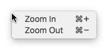

MenuItem QML Type
A native menu item. More...
| Import Statement: | import Qt.labs.platform 1.0 |
| Since: | Qt 5.8 |
| Inherits: | |
| Inherited By: |
Properties
- checkable : bool
- checked : bool
- enabled : bool
- font : font
- group : MenuItemGroup
- iconName : string
- iconSource : url
- menu : Menu
- role : enumeration
- separator : bool
- shortcut : keysequence
- subMenu : Menu
- text : string
- visible : bool
Signals
Methods
- void toggle()
Detailed Description
The MenuItem type provides a QML API for native platform menu items.

A menu item consists of an icon, text, and shortcut.
Menu {
id: zoomMenu
MenuItem {
text: qsTr("Zoom In")
shortcut: StandardKey.ZoomIn
onTriggered: zoomIn()
}
MenuItem {
text: qsTr("Zoom Out")
shortcut: StandardKey.ZoomOut
onTriggered: zoomOut()
}
}
Note: Types in Qt.labs modules are not guaranteed to remain compatible in future versions.
See also Menu and MenuItemGroup.
Property Documentation
This property holds whether the item is checkable.
A checkable menu item has an on/off state. For example, in a word processor, a "Bold" menu item may be either on or off. A menu item that is not checkable is a command item that is simply executed, e.g. file save.
The default value is false.
See also checked and MenuItemGroup.
This property holds whether the item is checked (on) or unchecked (off). The default value is false.
See also checkable and MenuItemGroup.
This property holds whether the item is enabled. The default value is true.
Disabled items cannot be triggered by the user. They do not disappear from menus, but they are displayed in a way which indicates that they are unavailable. For example, they might be displayed using only shades of gray.
When an item is disabled, it is not possible to trigger it through its shortcut.
group : MenuItemGroup |
This property holds the group that the item belongs to, or null if the item is not in a group.
This property holds the theme name of the menu item's icon.
MenuItem {
iconName: "edit-undo"
iconSource: "qrc:/images/undo.png"
}
See also iconSource and QIcon::fromTheme().
iconSource : url |
This property holds the url of the menu item's icon.
MenuItem {
iconName: "edit-undo"
iconSource: "qrc:/images/undo.png"
}
See also iconName.
[read-only] menu : Menu |
This property holds the menu that the item belongs to, or null if the item is not in a menu.
This property holds the role of the item. The role determines whether the item should be placed into the application menu on macOS.
Available values:
| Constant | Description |
|---|---|
MenuItem.NoRole | The item should not be put into the application menu |
MenuItem.TextHeuristicRole | The item should be put in the application menu based on the action's text (default) |
MenuItem.ApplicationSpecificRole | The item should be put in the application menu with an application-specific role |
MenuItem.AboutQtRole | The item handles the "About Qt" menu item. |
MenuItem.AboutRole | The item should be placed where the "About" menu item is in the application menu. The text of the menu item will be set to "About <application name>". The application name is fetched from the Info.plist file in the application's bundle (See Qt for OS X - Deployment). |
MenuItem.PreferencesRole | The item should be placed where the "Preferences..." menu item is in the application menu. |
MenuItem.QuitRole | The item should be placed where the Quit menu item is in the application menu. |
Specifying the role only has effect on items that are in the immediate menus of a menubar, not in the submenus of those menus. For example, if you have a "File" menu in your menubar and the "File" menu has a submenu, specifying a role for the items in that submenu has no effect. They will never be moved to the application menu.
This property holds whether the item is a separator line. The default value is false.
See also MenuSeparator.
This property holds the menu item's shortcut.
The shortcut key sequence can be set to one of the standard keyboard shortcuts, or it can be specified by a string containing a sequence of up to four key presses that are needed to trigger the shortcut.
The default value is an empty key sequence.
MenuItem {
shortcut: "Ctrl+E,Ctrl+W"
onTriggered: edit.wrapMode = TextEdit.Wrap
}
[read-only] subMenu : Menu |
This property holds the sub-menu that the item contains, or null if the item is not a sub-menu item.
Signal Documentation
Method Documentation
Toggles the checked state to its opposite state.